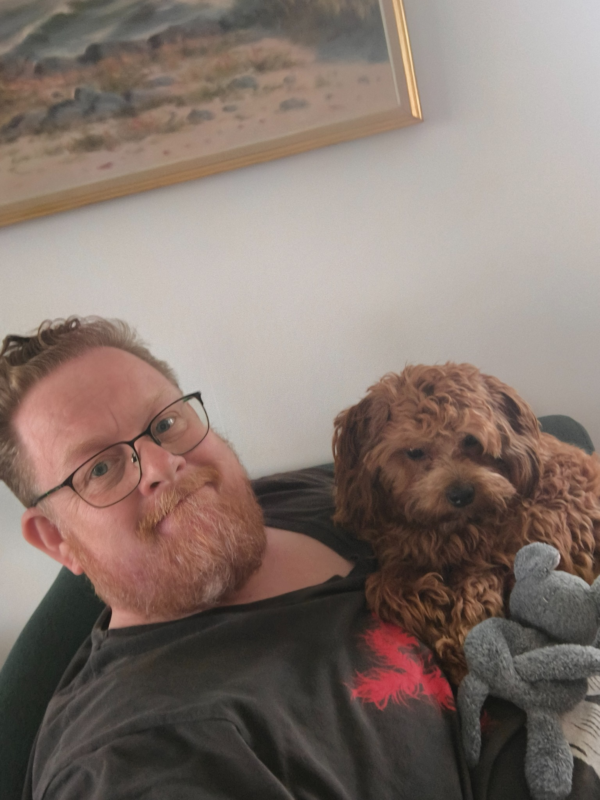

Om Onkel P
Jamen, Onkel P, det er mig. 😊
Jeg hedder Peter, men de fleste kalder mig Pede.
Onkel P er et navn, jeg har fået af min nevø og niece. Det syntes jeg egentlig var ret fedt, så jeg tog det til mig. Faktisk har jeg endda haft en chef, der syntes så godt om navnet, at han også begyndte at kalde mig Onkel P.
Hobbyer, idéer og gode projekter
Onkel P er først og fremmest et sted for mine hobbyer, og mest for hyggens skyld og for sjov. Her samler jeg de idéer, projekter og interesser, der faktisk bliver til noget.
Jeg er fra Thy, født i 1977, og jeg kan godt lide at gå og hygge mig med forskellige projekter. Jeg får temmelig mange idéer undervejs. Nogle bliver til noget, andre bliver liggende som gode idéer på hylden. Sådan er det. 😊
Hvad finder du her?
Her finder du blandt andet Dungeons of Darkmore, TailWag og Nordbryg. Tre ret forskellige ting, men alle sammen noget, jeg synes er sjovt at bruge tid på.
Jeg laver ikke nødvendigvis tingene, fordi de skal blive til noget stort. Det vigtigste er, at det er sjovt, hyggeligt og interessant at lave dem.
